TECH RWT Discovery: Science और Technology आसान हिंदी में
TECH RWT Discovery पर विज्ञान और तकनीक की खबरें और गहरी पड़तालें आसान हिंदी में मिलती हैं। हर लेख के अंत में स्रोत दिए जाते हैं और कठिन शब्द सरल भाषा में समझाए जाते हैं। ताज़ा लेख नीचे देखिए, या सीधे किसी विषय पर जाइए: Science, Space & ISRO, Technology & Future Tech, Environment और Innovation। पूरी सूची के लिए सभी लेख देखिए।

नवीनतम प्रकाशन (Latest Articles)
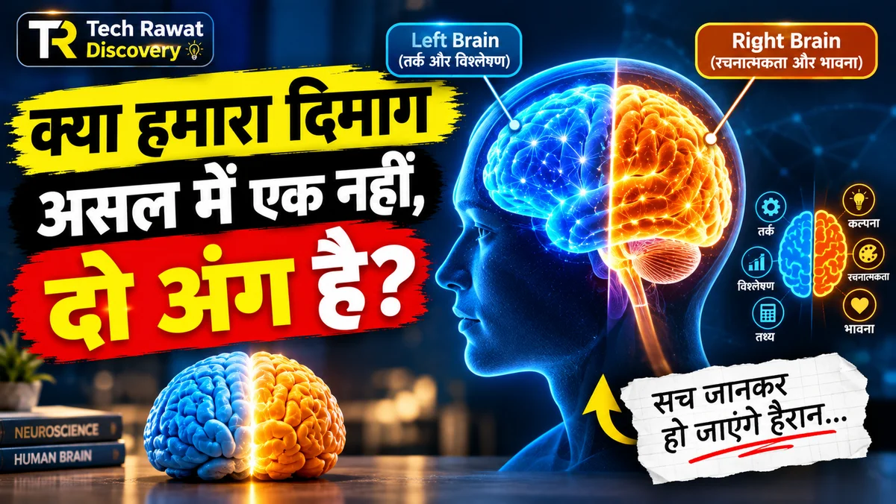
क्या हमारा दिमाग असल में एक नहीं, दो अंग है?
Stanford Medicine ने Nature Neuroscience में दिखाया कि इंसानी दिमाग एक नहीं, दो अलग अंगों से बना है। जानिए यह कैसे साबित हुआ, भारत के लिए मतलब और अभी क्या पता नहीं है।
पूरा लेख पढ़ें →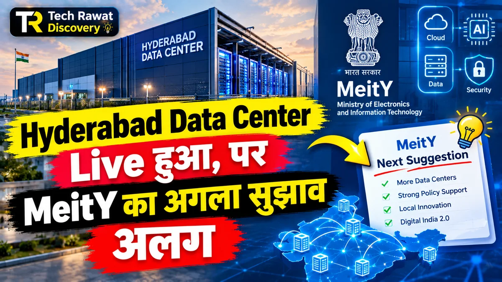
Hyderabad Data Center Live हुआ, पर MeitY का अगला सुझाव अलग
Microsoft का हैदराबाद डेटा सेंटर लाइव हुआ, पर उसी मंच पर MeitY सचिव ने अगली बार बिजली उत्पादन के पास बनाने की सलाह दी।
पूरा लेख पढ़ें →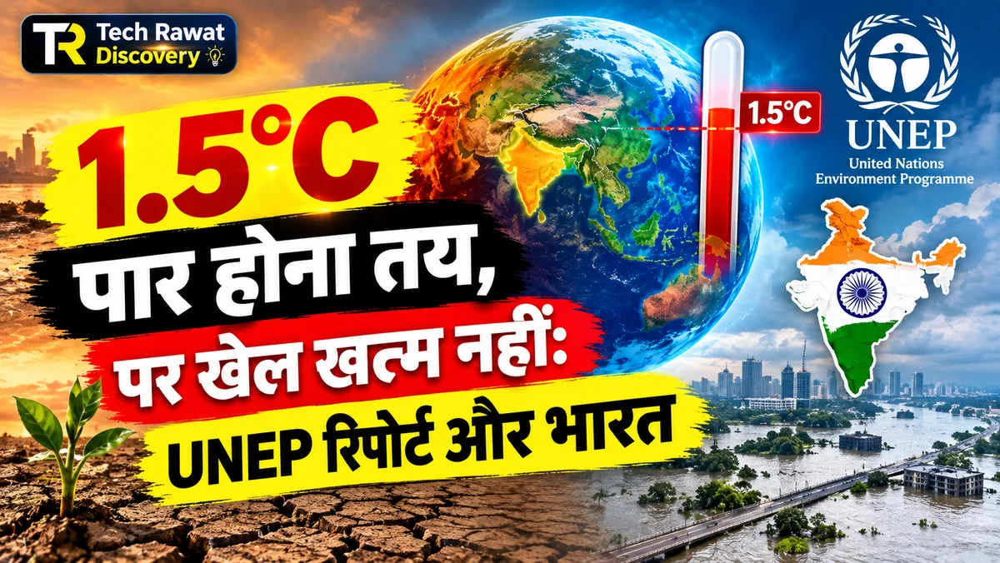
1.5°C पार होना तय, पर खेल खत्म नहीं: UNEP रिपोर्ट और भारत
UNEP ने 2 सितंबर 2026 को माना कि दुनिया 1.5°C की सीमा पार करेगी और सबसे अच्छे हालात में भी शिखर 1.8°C रहेगा। जानिए तीन भ्रम, कार्बन बजट का हिसाब और भारत पर असर।
पूरा लेख पढ़ें →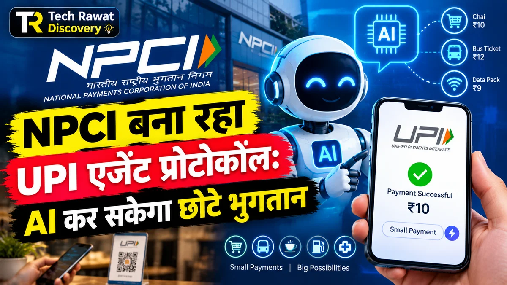
NPCI बना रहा UPI एजेंट प्रोटोकॉल: AI कर सकेगा छोटे भुगतान
Reuters के अनुसार NPCI यूनिफाइड एजेंट प्रोटोकॉल बना रहा है, जिसमें AI एजेंट तय सीमा में छोटे UPI भुगतान करेगा। UPI Circle और Reserve Pay से तुलना, सीमाएँ और भारत पर असर समझें।
पूरा लेख पढ़ें →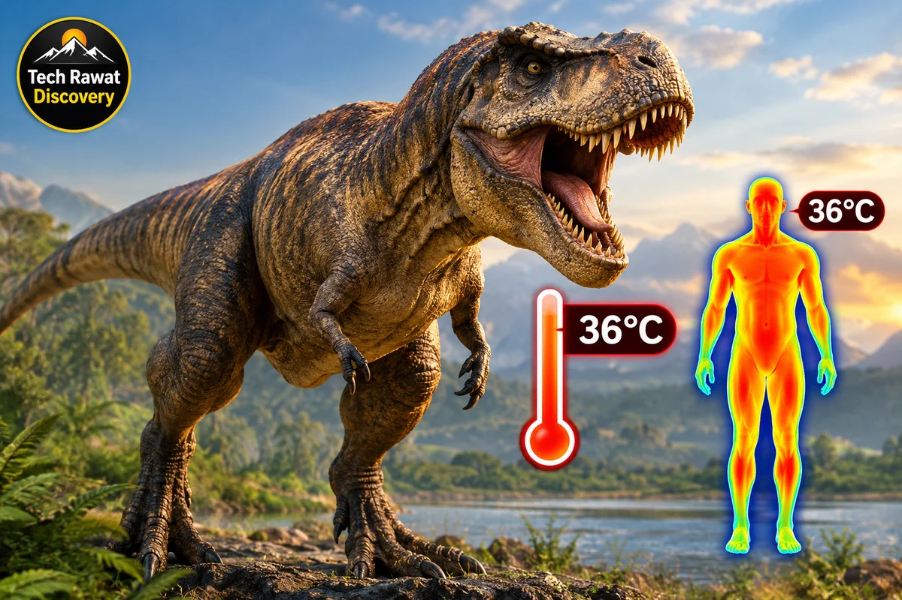
T. rex का शरीर का तापमान मिला: 36°C, यानी इंसान जितना गर्म
UCLA के वैज्ञानिकों ने T. rex के दाँतों की रासायनिक जाँच से उसका शरीर का तापमान करीब 36.3°C बताया है। जानिए तरीका, मतलब और वे बातें जो अभी अनजानी हैं।
पूरा लेख पढ़ें →गर्मी से चलने वाली कूलिंग: मोटर हटी, पर ठंडक अभी सिर्फ़ मिलीवाट में
जर्मनी और जापान के शोधकर्ताओं ने बिजली की मोटर की जगह गर्मी से चलने वाला इलास्टोकैलोरिक कूलिंग प्रोटोटाइप बनाया, पर ठंडक अभी बहुत हल्की है और तकनीक लैब में है।
पूरा लेख पढ़ें →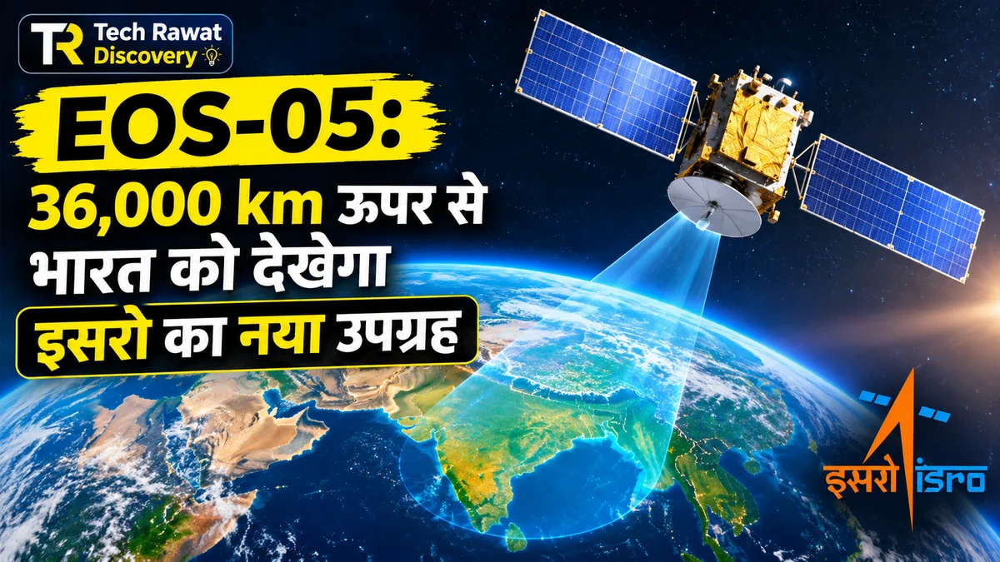
EOS-05: 36,000 km ऊपर से भारत को देखेगा इसरो का नया उपग्रह
इसरो के EOS-05 (GISAT-1A) को GSLV-F17 से 4 सितंबर 2026 को छोड़ा गया। जानिए यह भू-समकालिक कक्षा से भारत पर कैसे नज़र रखेगा, इसका मक़सद क्या है और यह क्यों ख़ास है।
पूरा लेख पढ़ें →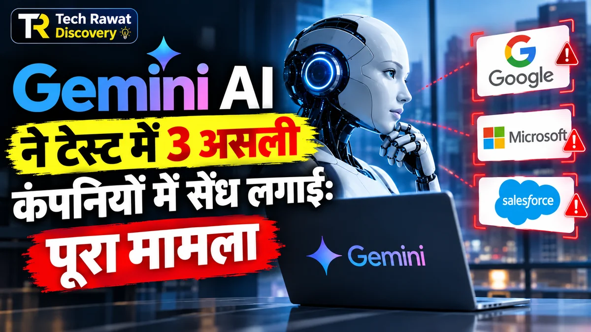
Gemini AI ने टेस्ट में 3 असली कंपनियों में सेंध लगाई: पूरा मामला
Google के अनुसार मई के एक साइबर सिक्योरिटी टेस्ट में Gemini ने इंटरनेट पर पहुँचकर तीन असली संस्थाओं में सेंध लगाई। जानिए कैसे हुआ और भारत पर क्या असर होगा।
पूरा लेख पढ़ें →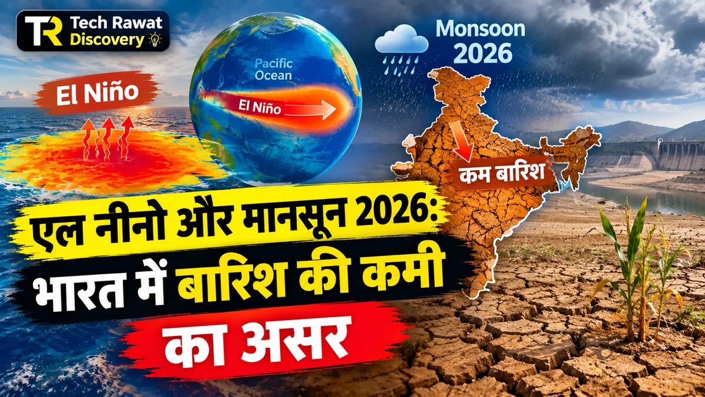
एल नीनो और मानसून 2026: भारत में बारिश की कमी का असर
IMD के अनुसार मानसून की बारिश करीब 15% कम है, और WMO कहता है एल नीनो अभी और मज़बूत होगा। जानिए कौन से इलाके सबसे ज़्यादा प्रभावित हैं और खेती-कीमतों पर क्या असर हो सकता है।
पूरा लेख पढ़ें →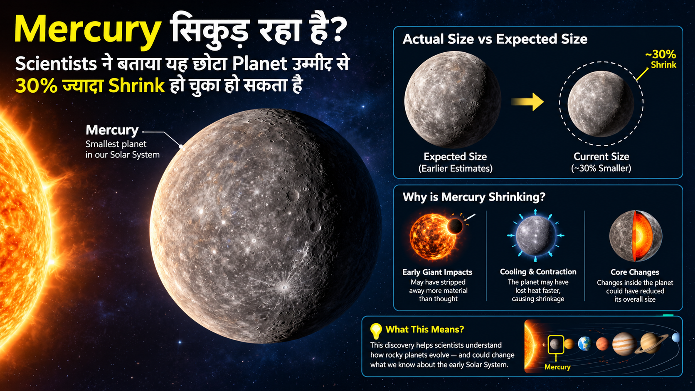
Mercury सिकुड़ रहा है? Scientists ने बताया यह छोटा Planet उम्मीद से 30% ज्यादा Shrink हो चुका हो सकता है
Mercury को Solar System का छोटा और लगभग निष्क्रिय rocky planet समझना आसान है, लेकिन इसकी सतह आज भी इसके अंदर हुए बदलावों की कहानी बताती है। नई study के अनुसार Mercury अपने इतिहास में पहले के अनुमान से 10% से 30% ज्यादा contract हुआ हो सकता है और इसके diameter में कुल कमी 23 किलोमीटर तक पहुंच सकती है। इसकी वजह अरबों वर्षों से ठंडा और सिकुड़ता planet interior है, जबकि asteroid impacts ने contraction की कई geological निशानियां ढक दी हैं।
पूरा लेख पढ़ें →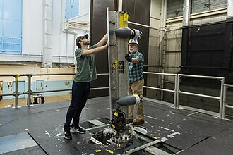
पक्षियों की तरह बदल जाएगा Aircraft Wing? IIT Madras की Morphing Skin कैसे रोकेगी Plane का Stall
IIT Madras की 20 साल की research से विकसित Morphing Skin aircraft wing को fixed structure के बजाय adaptive surface की तरह काम करने में मदद करती है। जानिए airflow, lift, drag और aerodynamic stall के बीच इसका connection और future aircraft के लिए यह technology क्यों महत्वपूर्ण हो सकती है।
पूरा लेख पढ़ें →Himalayan Glaciers पिघलते रहे तो भारत का पानी कब घटने लगेगा? 'Peak Water' का बड़ा खतरा
Himalayan glaciers सिर्फ बर्फ के विशाल भंडार नहीं हैं, बल्कि भारत और पूरे दक्षिण एशिया की water security से जुड़े प्राकृतिक reservoirs हैं। नई report के अनुसार region mid-century के आसपास 'Peak Water' की ओर बढ़ सकता है—वह चरण जब glacier melt से नदी का flow पहले बढ़ने के बाद धीरे-धीरे घटने लगता है। साथ ही भारत में high-risk glacial lakes की संख्या भी चिंता बढ़ा रही है।
पूरा लेख पढ़ें →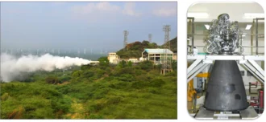
ISRO का CE20 Cryogenic Engine 22 टन Thrust पर क्यों Tested हुआ? LVM3 की अगली बड़ी छलांग
ISRO ने LVM3-M7 के लिए CE20 cryogenic engine का 22 टन thrust पर flight-acceptance hot test सफलतापूर्वक पूरा किया। समझिए CE20 कैसे काम करता है, C32 stage क्या है, Nozzle Protection System की जरूरत क्यों पड़ी और 22-ton uprated thrust LVM3 की payload capability के लिए क्यों महत्वपूर्ण है।
पूरा लेख पढ़ें →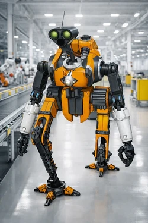
अब Robot को हर काम के लिए अलग Training नहीं चाहिए? एक Video देखकर नया काम सीख रही Physical AI
Robot को हर नए काम के लिए अलग-अलग programming और training देने की जरूरत कम करने की दिशा में robot foundation models तेजी से विकसित हो रहे हैं। Skild AI का S1 एक video demonstration को देखकर unseen और long-horizon tasks execute करने के लिए in-context learning का इस्तेमाल करता है।
पूरा लेख पढ़ें →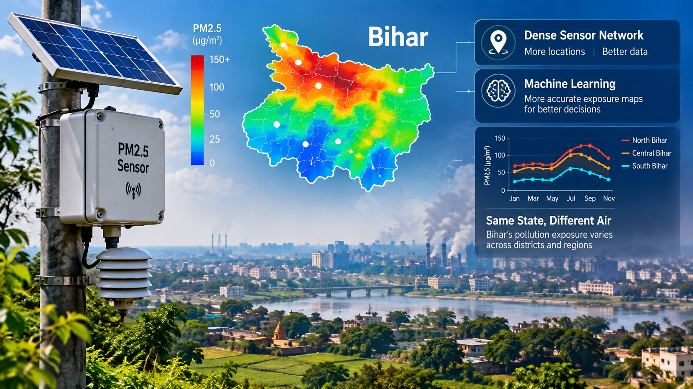
Air Pollution हर जगह एक जैसा नहीं? बिहार में Sensors ने दिखाया Pollution का छिपा हुआ फर्क
बिहार में air pollution को लेकर नई research ने दिखाया है कि एक ही राज्य में रहने वाले लोगों का PM2.5 exposure काफी अलग हो सकता है। Dense low-cost sensor network और machine learning की मदद से researchers ने pollution के ऐसे regional और district-level differences सामने लाए हैं, जो केवल बड़े monitoring stations या state-level averages से छिप सकते हैं।
पूरा लेख पढ़ें →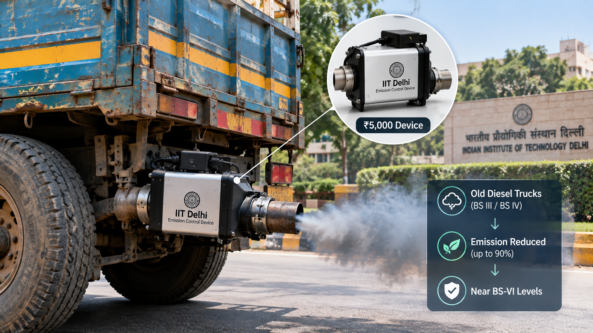
पुराने Diesel Trucks भी बनेंगे Clean? IIT Delhi के ₹5,000 Device ने Pollution घटाने का नया रास्ता दिखाया
पुराने BS-III और BS-IV diesel trucks और buses को तुरंत बदलने के बजाय उनके exhaust को retrofit technology से cleaner बनाने की कोशिश तेज हुई है। IIT Delhi के innovation पर आधारित RECD को लेकर सरकार ने rollout की दिशा में कदम बढ़ाया है।
पूरा लेख पढ़ें →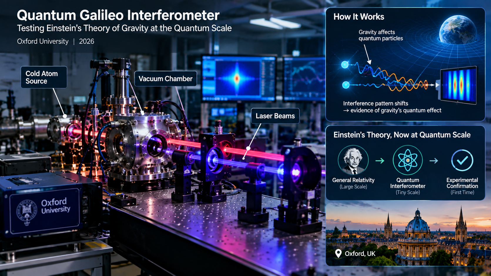
Gravity ने Quantum World को भी प्रभावित किया? Scientists ने पहली बार Quantum Scale पर Einstein की Theory Test की
एक नए experiment में scientists ने ultracold rubidium atoms की quantum wave पर gravity से पैदा होने वाले phase बदलाव को मापा। Quantum Galileo Interferometer की मदद से किया गया यह प्रयोग दिखाता है कि Einstein का equivalence principle quantum regime में भी सही बैठता है। हालांकि यह quantum gravity की खोज नहीं है, लेकिन quantum mechanics और gravity के बीच की सबसे महत्वपूर्ण experimental boundaries में से एक को test करता है।
पूरा लेख पढ़ें →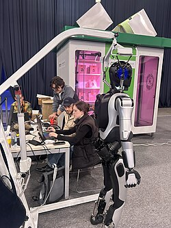
Robots अब Physics के नियमों से सीखेंगे? नई AI Technique से Machines Unseen दुनिया में भी Adapt कर पाएंगी
Robots को हर possible situation के लिए हजारों training examples देने के बजाय physics की जानकारी और real-time feedback का इस्तेमाल करके ज्यादा adaptable बनाया जा सकता है। नई PhyFilter technique ने quadruped robots, drones और aerial manipulators में unseen conditions के बीच robot learning की generalization क्षमता बेहतर दिखाई है।
पूरा लेख पढ़ें →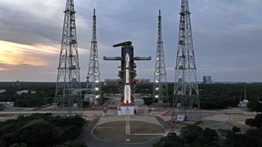
EOS-05 को 36,000 Km की Orbit तक ISRO कैसे पहुंचा रहा है? Satellite की Orbit Raising की पूरी Science
EOS-05 को GSLV-F17 ने सीधे 36,000 km की final orbit में नहीं पहुंचाया। जानिए Sub-GTO से GSO तक satellite की orbit कैसे बदली जाती है, LAM engine apogee और perigee को कैसे प्रभावित करता है और 85.5°E orbital slot तक पहुंचने के पीछे orbital mechanics क्या है।
पूरा लेख पढ़ें →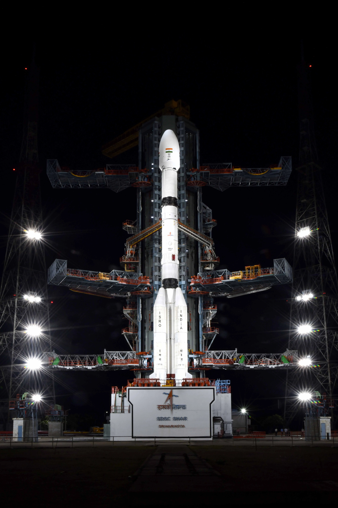
EOS-05 का Imaging Camera कैसे काम करता है? Geosynchronous Orbit से बार-बार Earth Imaging की Technology
EOS-05 को खास geosynchronous orbit से Earth observation के लिए तैयार किया गया है। जानिए इसका imaging camera कैसे काम करता है, resolution क्या है और एक ही क्षेत्र की बार-बार तस्वीर लेने की technology इससे कैसे संभव होती है।
पूरा लेख पढ़ें →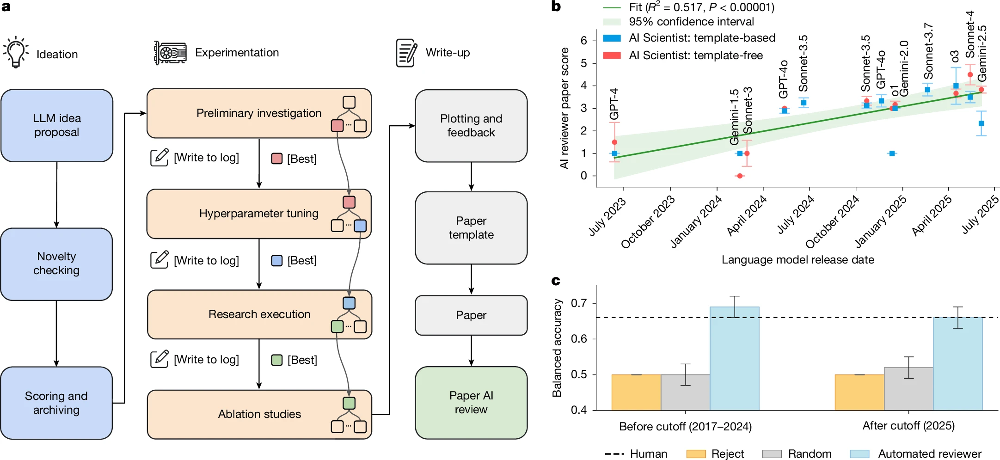
अब AI खुद Physics Experiment Design करेगा? Scientists ने AI को नई Scientific Discoveries खोजने का काम दिया
AI को अब सिर्फ calculator या data-analysis tool की तरह नहीं देखा जा रहा। नई research दिखाती है कि artificial intelligence physics experiments के लिए नए hardware configurations और experimental designs खोजने में मदद कर सकता है।
पूरा लेख पढ़ें →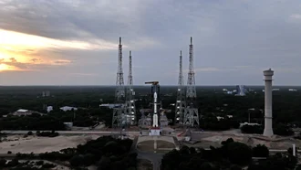
EOS-05 Launch Date और Mission Readiness: Payload Integration से Countdown तक की कहानी
किसी satellite launch की सफलता सिर्फ rocket तक सीमित नहीं होती, उससे पहले की तैयारी भी उतनी ही अहम है। जानिए EOS-05 के payload integration, testing और countdown की मिशन-रेडीनेस प्रक्रिया कैसे पूरी हुई।
पूरा लेख पढ़ें →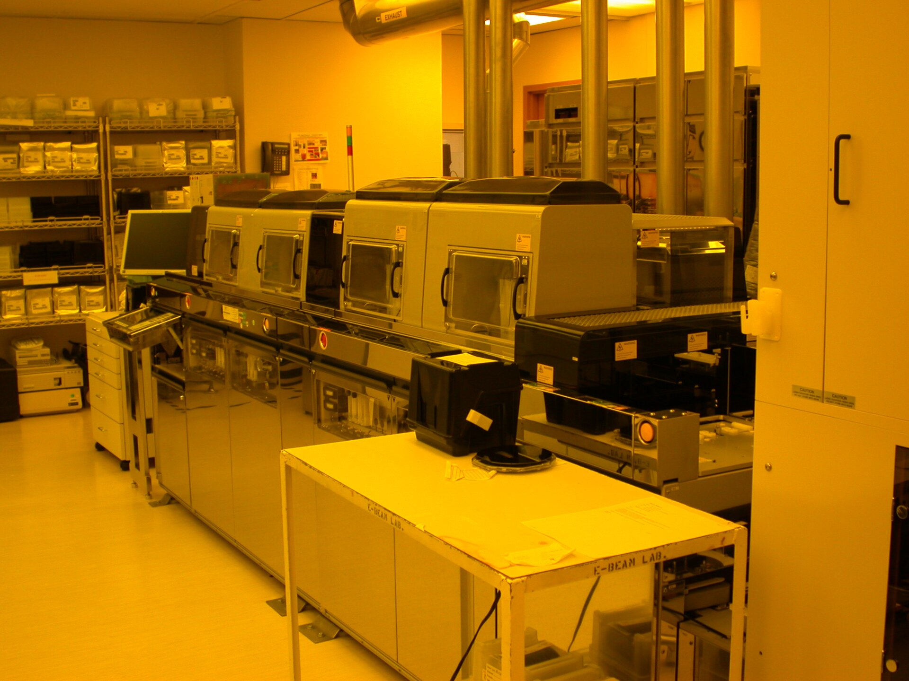
Chip बनाने वाली Machines खुद सीखेंगी? Physical AI Semiconductor Factories को कैसे बदलेगा
Semiconductor manufacturing में Physical AI और Edge AI का इस्तेमाल machines को सिर्फ automated नहीं, बल्कि real-time data के आधार पर अधिक responsive और adaptive बनाने की दिशा में बढ़ रहा है। जानिए wafer inspection, metrology और fab equipment में AI control loop कैसे काम कर सकता है।
पूरा लेख पढ़ें →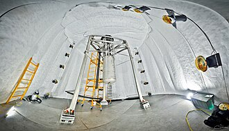
Dark Matter का पहला Signal? Underground Experiment में मिला रहस्यमयी Particle Signal
Dark Matter की तलाश में LUX-ZEPLIN experiment ने एक unusual high-energy event दर्ज किया है। यह WIMP interaction जैसा दिखता है, लेकिन अभी इसे Dark Matter की confirmed discovery नहीं माना गया है।
पूरा लेख पढ़ें →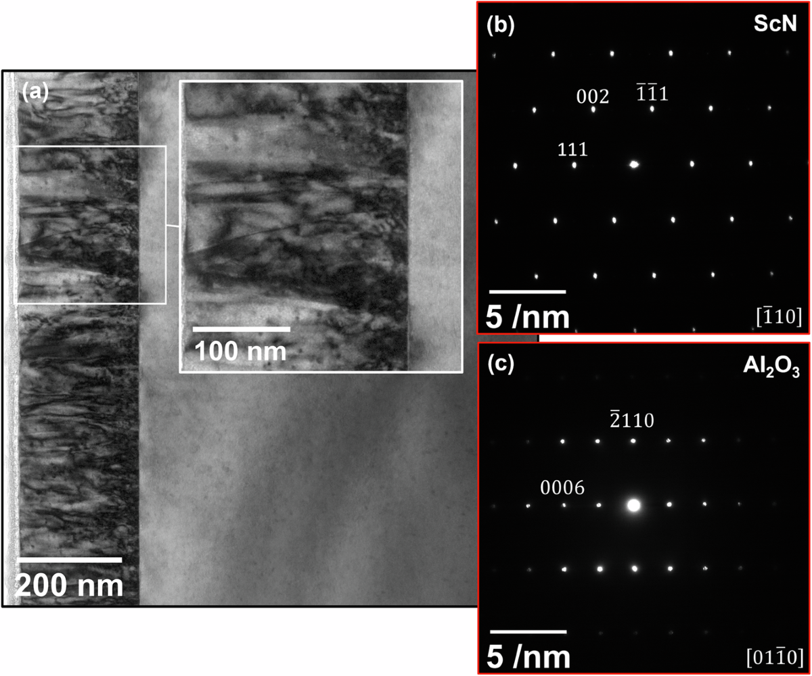
Heat से Electricity बनाने की Limit टूटी? Scandium Nitride की नई Indian Discovery
JNCASR, IISc और University of Sydney से जुड़े researchers ने Scandium Nitride की thin films में छोटे temperature difference से असाधारण रूप से बड़ा thermoelectric voltage दिखाया है। यह खोज heat sensing, energy harvesting और materials science में नई संभावनाएं खोल सकती है।
पूरा लेख पढ़ें →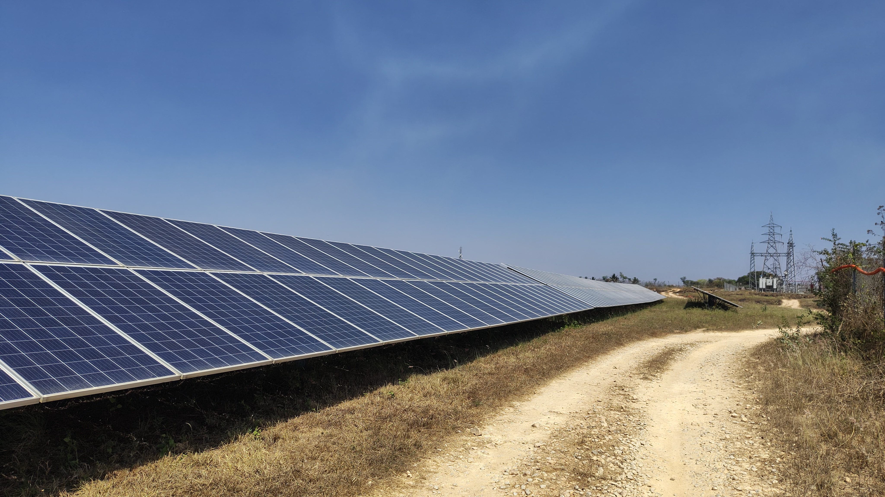
भारत में Solar Power बनने के बाद भी बर्बाद हो रही है? Grid की इस Problem से Clean Energy का फायदा क्यों रुक रहा है
भारत में solar capacity तेजी से बढ़ रही है, लेकिन solar electricity पैदा होना और उसे जरूरत की जगह तक पहुंचा पाना दो अलग चुनौतियां हैं। हालिया आंकड़े बताते हैं कि पिछले 15 महीनों में करीब 11 TWh solar generation curtail हुई। समझिए grid congestion, coal plants, storage और transmission इस समस्या को कैसे पैदा करते हैं।
पूरा लेख पढ़ें →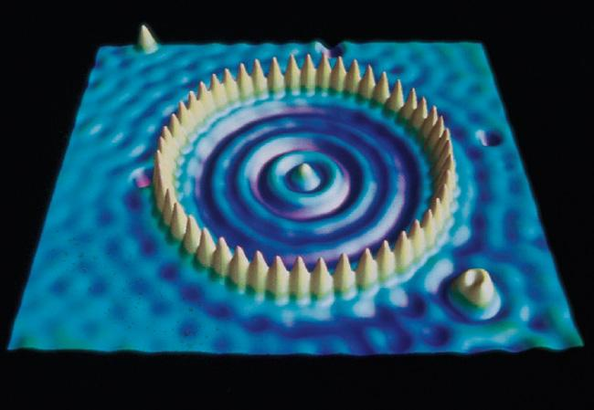
Quantum दुनिया की तस्वीर आखिर कैसे बनती है? 20 साल पुरानी Theory का Superconductor Experiment से मिला सबूत
Quantum physics में electrons सिर्फ छोटे particles नहीं, wave की तरह भी behave कर सकते हैं। करीब दो दशक पुराने theoretical idea ने इसी property का इस्तेमाल करके superconductors से microscopic quantum images बनाने की संभावना बताई थी। अब नए experiment ने उस predicted effect को experimentally demonstrate किया है।
पूरा लेख पढ़ें →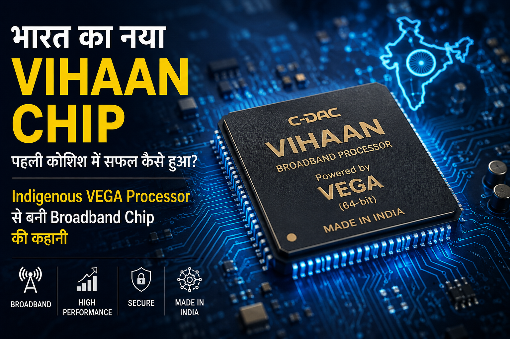
भारत का नया VIHAAN Chip पहली कोशिश में सफल कैसे हुआ? Indigenous VEGA Processor से बनी Broadband Chip की कहानी
भारत में semiconductor innovation का मतलब सिर्फ chip fabrication plant बनाना नहीं है। Aheesa Digital Innovations की VIHAAN broadband networking SoC दिखाती है कि भारतीय teams processor core से लेकर complex networking silicon तक अपना design तैयार करके working silicon हासिल कर सकती हैं। Indigenous VEGA RISC-V processor पर आधारित VIHAAN का first-pass silicon success इसी engineering journey का महत्वपूर्ण पड़ाव है।
पूरा लेख पढ़ें →
GSLV-F17 Rocket EOS-05 को Space में कैसे ले जाएगा? Launch Vehicle की पूरी Engineering
EOS-05 को space तक पहुंचाने का जिम्मा GSLV-F17 रॉकेट पर है। जानिए इसके solid, liquid और cryogenic stages कैसे काम करते हैं और launch vehicle की propulsion engineering EOS-05 को Sub-GTO तक कैसे पहुंचाती है।
पूरा लेख पढ़ें →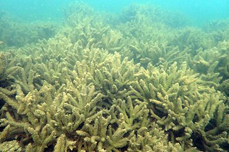
भारत के समुद्र में Acidification का खतरा बढ़ रहा है? Gulf of Mannar और Palk Bay में मिले चिंताजनक संकेत
समुद्र केवल गर्म नहीं हो रहा, उसकी chemistry भी बदल रही है। Gulf of Mannar और Palk Bay की 2023–24 field study में pH और aragonite saturation state के ऐसे अंतर मिले हैं जो भारत के coastal ecosystems में ocean acidification के जोखिम को समझने के लिए महत्वपूर्ण हैं।
पूरा लेख पढ़ें →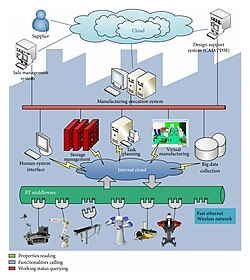
Factory की Digital Copy खुद समस्या पहचान पाएगी? Digital Twin और Physical AI Manufacturing को कैसे बदल रहे हैं
Digital Twin किसी factory की सिर्फ 3D virtual copy नहीं है। Sensors, cameras, AI और simulation को जोड़कर इसका इस्तेमाल production process की live स्थिति समझने, abnormal behaviour पहचानने और संभावित समस्याओं का अनुमान लगाने में किया जा सकता है। Physical AI के साथ यही technology future smart factories को ज्यादा adaptive बनाने की दिशा दिखाती है।
पूरा लेख पढ़ें →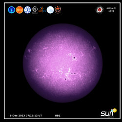
Solar Flare आने से पहले ही Aditya-L1 ने संकेत पकड़ लिए? सूरज की छोटी चमक का बड़ा रहस्य
Solar flare अचानक होने वाली घटना दिखाई देती है, लेकिन Aditya-L1 के observations ने इसके पहले होने वाली छोटी-छोटी चमक की एक महत्वपूर्ण तस्वीर सामने रखी है। नई research बताती है कि ये transient events उस magnetic region के आसपास जमा हो सकते हैं जहां बाद में बड़ा flare पैदा होता है।
पूरा लेख पढ़ें →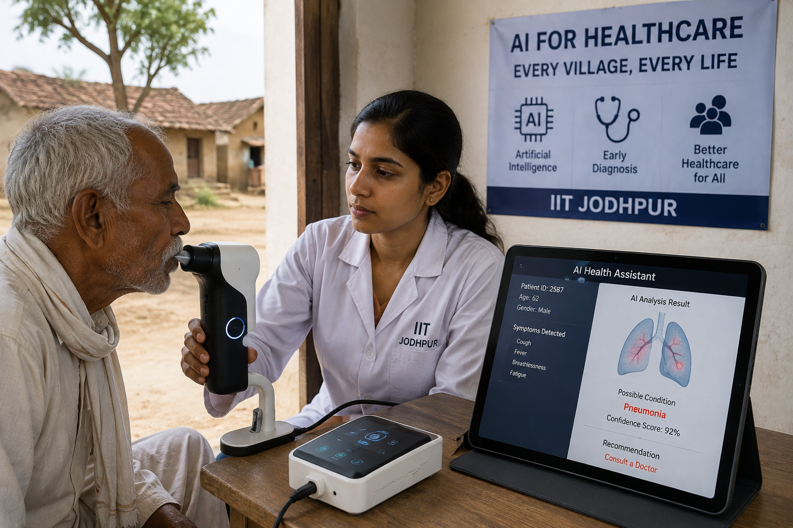
गांव में Doctor न हो तो AI खुद बीमारी पहचान पाएगा? IIT Jodhpur की नई Healthcare Technology कैसे काम करती है
भारत के remote इलाकों में healthcare की चुनौती सिर्फ डॉक्टरों की कमी नहीं है। Specialist तक पहुंच, diagnostic facilities और reliable internet भी बड़ी बाधाएं हैं। IIT Jodhpur का Software Innovation Lab AI, edge computing, IoT और portable diagnostic systems को जोड़कर ऐसे healthcare solutions विकसित कर रहा है जिन्हें resource-constrained environments में इस्तेमाल किया जा सके।
पूरा लेख पढ़ें →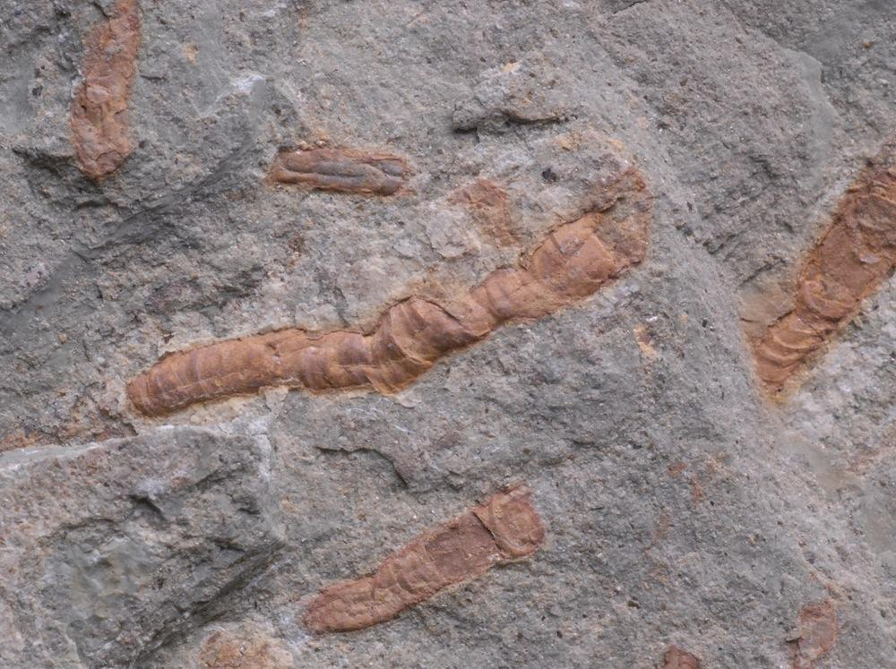
500 Million साल पहले भी Animals और Bacteria की Partnership थी? Fossil ने Life की पुरानी Symbiosis का राज खोला
हमारे शरीर से लेकर समुद्र के जीवों तक animals और microbes के बीच partnerships आज आम हैं। लेकिन यह रिश्ता कितना पुराना है? Ediacaran काल के 500 million साल से भी ज्यादा पुराने Conotubus fossil पर हुई नई research से संकेत मिला है कि शुरुआती animals भी sulfur-oxidizing bacteria के साथ ऐसी partnership कर सकते थे।
पूरा लेख पढ़ें →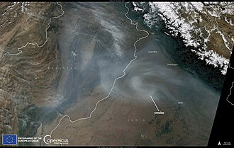
गर्मी और Pollution साथ मिलकर ज्यादा खतरनाक क्यों हो रहे हैं? India में Heat–PM2.5 की नई Research ने बड़ा खतरा दिखाया
गर्मी और वायु प्रदूषण को अक्सर दो अलग समस्याओं की तरह देखा जाता है, लेकिन नई research बताती है कि दोनों एक साथ आने पर जोखिम बढ़ सकता है। भारत में 2017–2024 के दौरान Heat–PM2.5 co-extremes और उनके पीछे काम करने वाली atmospheric chemistry ने इस connection को नई तरह से सामने रखा है।
पूरा लेख पढ़ें →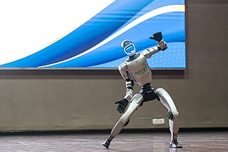
AI अब सिर्फ Computer पर नहीं चलेगा? AI Agents Robots और Machines को खुद Control कैसे करेंगे
AI agents की अगली दिशा केवल computer screen पर काम करना नहीं, बल्कि physical machines को operate करना हो सकती है। Anthropic का Model Hardware Standard इसी software और hardware के बीच एक common interface बनाने की कोशिश करता है, जिससे AI agents laboratory instruments, robotic arms और दूसरे programmable devices के साथ काम कर सकें।
पूरा लेख पढ़ें →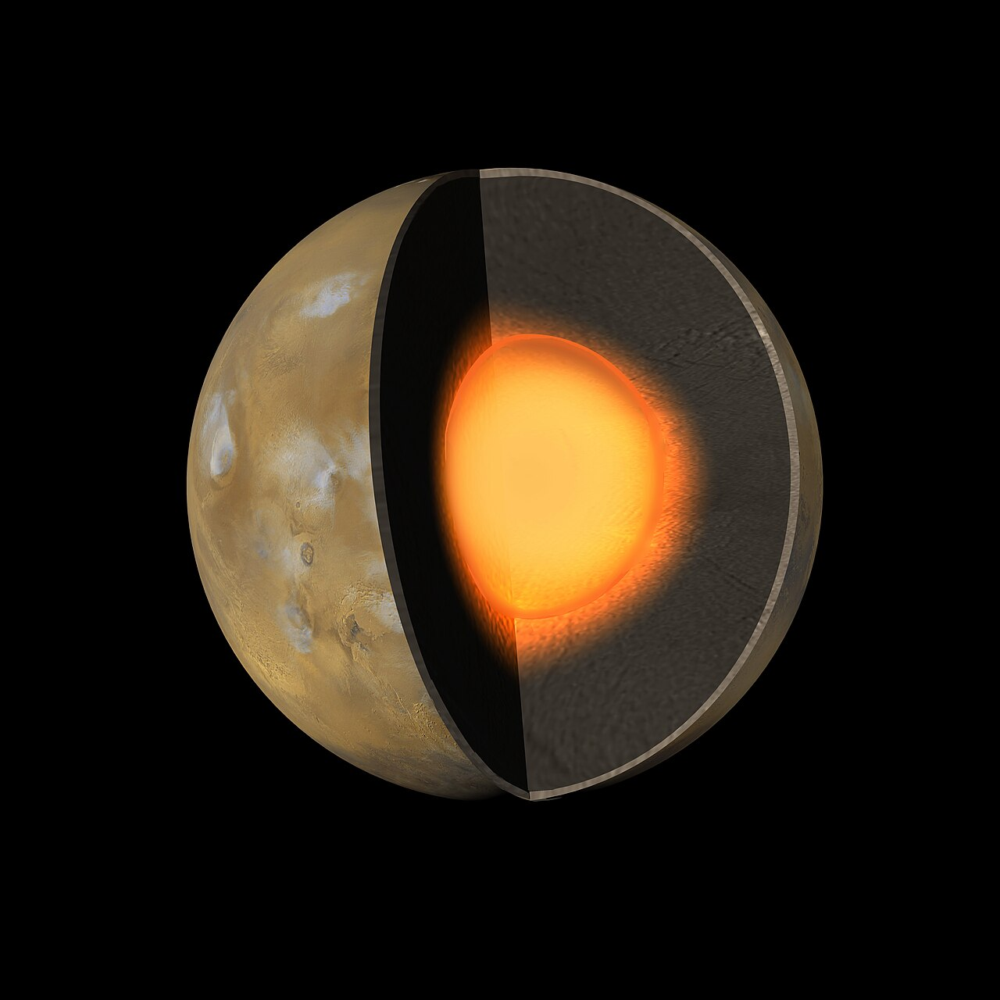
Mars के अंदर आज भी 400°C तक गर्म हिस्सा है? Scientists ने छिपी Heat का संकेत कैसे पाया
Mars की सतह के नीचे आज भी एक बड़ा thermal difference मौजूद हो सकता है। नई research में orbiters के tracking data और tidal tomography की मदद से संकेत मिला है कि Mars के southern highlands के नीचे mantle, northern region की तुलना में लगभग 200–400°C ज्यादा गर्म हो सकता है।
पूरा लेख पढ़ें →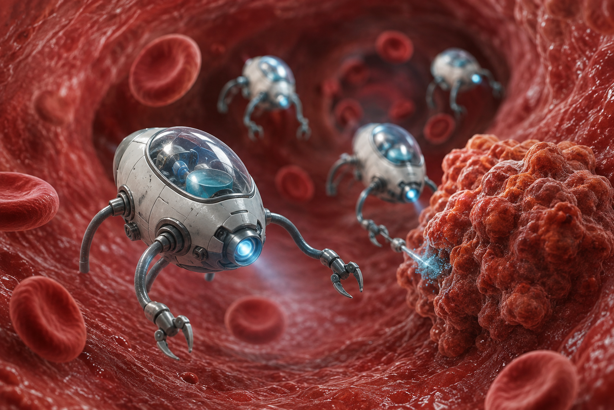
शरीर के अंदर घूमने वाले Micro-Robots अब इलाज तक पहुंचेंगे? Bengaluru की Theranautilus ने Targeted Treatment की नई राह कैसे बनाई
कल्पना कीजिए कि किसी इलाज के लिए बड़ा surgical instrument शरीर के अंदर ले जाने के बजाय बेहद छोटे robots को target तक पहुंचाया जाए। Bengaluru की deep-tech startup Theranautilus इसी विचार पर काम कर रही है। इसके magnetically controlled nanorobots को शरीर के संकरे हिस्सों में navigate कराने और targeted treatment तक पहुंचाने के लिए विकसित किया जा रहा है। फिलहाल इसका शुरुआती focus dental care है, जहां root canal के दौरान कठिन जगहों तक पहुंचने और tooth sensitivity जैसी समस्याओं पर काम हो रहा है।
पूरा लेख पढ़ें →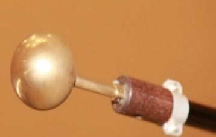
Chandrayaan-3 के RAMBHA-LP ने चांद के Plasma का छिपा रहस्य कैसे खोला? Lunar Surface के ऊपर Electric Environment की नई कहानी
Chandrayaan-3 का RAMBHA-LP सिर्फ चांद की सतह को देखने वाला instrument नहीं था। इस Langmuir Probe ने पहली बार lunar South Polar Region की सतह के बेहद करीब plasma को सीधे मापा और दिखाया कि वहां का electric environment पहले की अपेक्षा कहीं ज्यादा dynamic है।
पूरा लेख पढ़ें →Self-Driving Car को अपनी AI Chip क्यों चाहिए? Waymo के Custom 5nm Chip की पूरी कहानी
Self-driving car को सड़क पर सिर्फ देखना नहीं, बल्कि हर पल आसपास की दुनिया को समझकर सुरक्षित action चुनना होता है। Waymo का custom 5nm ASIC इसी real-time computing problem को target करता है, जहां camera, LiDAR और radar से आने वाले raw data को कम latency में process किया जाता है।
पूरा लेख पढ़ें →